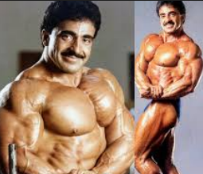
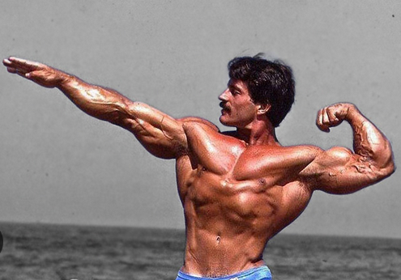
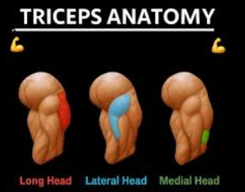
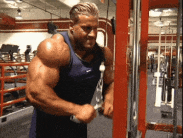
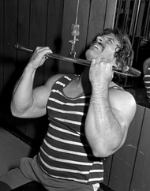
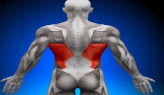
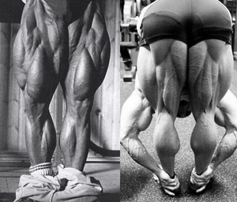

credit (mohammed)
hello to my book about bodybuilding that's
going to make you from a beginner to a guy
who has a very decent physique we will together understand
the ideas of bodybuilding mostly to the very essence of it
why do we train why do we sleep and finally why do we eat
first lets discuss the 3 pillars of body building
(Sleep , Food , Training)
we will discuss each pillar and how useful it is and why you CAN NOT!
focus on 2 and leave the 3rd
SLEEP
sleep is the first pillar of body building which we will discuss
without it we won't be able to grow our muscles if not we will lose muscles
why sleep is important you ask? because sleep is the tool that repairs muscles
in workouts especially if you realize most people go to train for 1hour why not
5hours 6hours etc because what you are doing there is tearing down your muscles
yes you heard me right you are tearing down your muscles and in sleep when your
muscle is tired from the workout and all those microtears happen
inside the muscle as you can see in the video
as you can see in the video those muscle tears
while the video is useful though it's wrong because those muscle
tears happen not like 100 muscle tear or something
no it's in the millions so the muscle can get torn up evenly
and will trigger the body's natural growth mechanism to
repair those tears and then! you grow more muscle size
since the body's brain thinks "oh since the muscles are tearing
that means I'm fighting a strong animal out there so I have
to make more muscles in order to be stronger and survive"
that's why the muscles gets bigger and here is the worst thing that could happen if you have
bad sleep or inconsistent sleep like sleeping one day at 8pm 2nd day 11am then 3am etc
so during sleep you repair your microtears inside the muscle
and also besides muscle
When your sleep schedule keeps changing:
❌ Cortisol ↑
❌ Testosterone ↓
❌ GH ↓
❌ Deep sleep ↓
❌ Recovery ↓
❌ Protein synthesis ↓
Result:
👉 slower muscle growth
👉 more fat gain, more inflammation, lower energy
👉 weaker workouts
Quick note: if you want to get a consistent sleep schedule then you need to follow this list down below
- vitamin D by going into the 8am sun without a T-shirt and pants and do that for at least 30minutes
that will alert your brain that it is day time and you should NOT sleep at that time
- ALWAYS make sure NOT to sleep at that time more like try to wake up at specific time like 7am
or 3am which is considered the best sleep 8pm-3am and if you slept at 3am and woke up at 7am then you
have to bear as much as you can to not sleep or take a nap I'll repeat DO NOT! take a nap because
you will instantly go into deep state of sleep
- no phone 1hour before bedtime no don't listen to those people who says "aww it is okay to use your phone
without the blue light just use yellow light" DO NOT! listen to those people because what they don't understand
its not more about your brain knowing it is day or night it is more about your brain having 0 dopamine
yes you heard me right dopamine and scrolling through your phone is what causes you to not sleep so read a book
like bible or quran or any type of book try praying or meditating go eat something organize your room do ANYTHING except
touching your phone
now I'll explain what are Cortisol Testosterone GH
Testosterone
is the hormone that is produced by the male's body mostly
by testicles unlike females who produce this hormone in very small amounts using the ovaries and adrenal glands
and the adrenal glands are spongy yellowish stuff above the kidneys that's where they get most of their Testosterone
and this hormone helps a lot in building muscles especially in the male's body that's why
you see gorilla's tigers or even regular humans with more testosterone has more muscles
than the average guy and testosterone also helps in building muscles even though muscle is made of 100%
protein you ask but how does it work I'll tell you it works like this "Amino acids = bricks
Testosterone & GH = construction managers
Your DNA = blueprint" so testosterone
1 boosts the rate at which your muscle cells build new proteins.
2 Lowers muscle protein breakdown
3 makes you stronger or more of an animal/beast to lift heavier which will stimulate the growth mechanism
leading into more muscle fibers breakdown
So you keep more of the muscle you build.
IGF-1
this hormone is produced by muscle cells unlike GH which a lot of people mistaken
thinking IGF-1 is same as GH but it's not GH comes from the brain meanwhile IGF-1
comes after training by the muscles and IGF-1 tells the muscle cells to grab the amino acids
and use them as bricks to not only repair themselves but also make the muscle bigger
so in summary (muscle cells produce IGF-1 , IGF-1 tells muscle cells what to do
which is repairing themselves)
Cortisol
Cortisol is the worst enemy to a body builder it is the hormone that makes the muscle fibers
destroy themselves and not in a good way it burns the muscles and makes it harder to recover
stuff that triggers Cortisol (waking up , bad mood , training for more than 1hour , anger)
that's why you see some bodybuilders hurry as soon as they wake up to meditate or pray so they
lower the cortisol and the reason cortisol rises it is because it wakes up the body so the worst
thing you could do to your body is not sleeping for a small amount of time it is sleeping for long
periods of time because that will trigger cortisol which
will destroy your body because your brain doesn't care about the muscles your evolutionary brain cares about
waking you up to feed your family to go hunt before the night comes in and if you are addicted to masturbation
then try as much as you can to not feel bad after masturbation because that's what triggers cortisol for a lot
of the young teens out there BUT if you are trying to go on diet like mr.olympia who want 3-1% body fat
then you need a lot of cortisol and lactic acid in your body by training for more than 1hour a day
like 2 3 or even 4hours a day and then spend the rest on burning fat will that burn muscles? yes of course but will it burn
fat? yes and a lot of fat will be burned during that process and don't worry because I'll tell you about
something called muscle memory which will literally help you gain all the muscles you lost during that
hard diet in at least 1 month but make sure to take a lot of days off because your primary focus is to
recover as much muscles as you can and try to be disciplined on your diet or you will gain fat
now that we discuss sleep it is time to go into Nutrition and Training
Nutrition
when it comes to nutrition then we have to ask ourselves what even is nutrition
it is eating and feeding yourself a lot of food and eating the different types of food like
carbs protein and finally good fat we will dive deep into basic nutrition and how each one works
how does nutrition gets absorbed
food goes from our mouth to Esophagus → Food pipe
The esophagus is just a “tube” that: squeezes food downward
using muscle waves (peristalsis) drops it into your stomach
You don’t digest anything here — it’s just transport.
and using the pipes it goes to the stomach which will release an acid
depending on the type of food you eat protein carbs etc and this acid will break protein carbs
into liquid form and that liquid form will be mixed of course with the stomach acid from here
the stomach will open like a valve only squirting out the acid + liquid nutrition and as soon that happens
the the acid is neutralized instantly in the small intestine and from that the liquid nutrition will
break into (carbs = glycogen, protein = amino acids good fat =fat fragments) which will go to the liver and it will acts as a filter to
filter nutrition and from that they will go to bloodstream
Carbs , Protein , Good fat
Carbs🍚
carbs is one of the most misunderstood nutrition a lot of people think are just food that makes you
fat but they are wrong about carbs carbs mostly comes from rice , potatoes
and it goes to the stomach turns into stomach liquid and into the intestine to turn into glycogen
now once it enters bloodstream it will go to the muscles now glycogen have 2 functions inside the muscle
the first is to pump that muscle the more you eat carbs like rice the more the muscle will be filled with glycogen
which will leads to make it seem bigger and have bigger muscles and the 2nd is to have more energy inside your muscle
which makes you a beast inside the gym by this recipe you will have energy "you do cardio as a warm up as soon
as you hit the gym ---> you will gain oxygen which will get in your bloodstream ----> it will burn the glycogen
using the Mitochondria or the energy cells ----> it will then turn into glucose and that glucose and into the ATP the final
form of energy that Mitochondria produces cells it will turn into energy" Now the important part
if you don't warm up using cardio machines your Lactic acid which will be combined with glucose
in need to produce energy since you are lifting weight and it will destroy your body since lactic
acid will burn your muscles unlike oxygen
how much you need carbs?
the recent studies shows that you need carbs depending on your body weight ratio
bodyweight * 6 = carbs(gram)

water
now try to drink gallon or 2 of water everyday sips and Do NOT i repeat Do not drink it at once
no! slowly drink water like if you have a cup of water sip it 3 times to finish it not drinking it all at once
because that is unhealthy because drinking water causes shock to the heart that's why i recommend to sip it
Protein🍳🍗🍖
protein is the main source of muscles or the flesh you are building it goes to the stomach
then to the small intestine and turns amino acid now WATCH OUT you need different types of protein that's why a lot of people don't recommend peanut
butter because it doesn't has that much amino acid building your muscles is like a lego you need different shapes
colours to build one that's why you need more than 1 source of protein eggs red meat sardine each has different types of
amino acids that you need to put in your diet in order to have a balanced diet with good amount
of amino acid
how much protein you need?
now just like carbs there is a specific amount of protein you need to feed your body
body weight * 2
now if you don't have that much money remember you can always buy cans of sardine
or if you are really broke then you can buy chicken legs which is a great source of protein
and most people even throw the chicken legs in the trash since nobody buys them and you can
literally get free protein source
be careful though you can't eat more than 40gram of protein in 1 meal you need to keep eating
throughout the day
now we will talk a little bit about fat
there isn't really to talk about fat except a few tips and how fat works in general
fat gets absorbed by the body and not every fat is bad there are saturated fat like sunflower oil which has high amount of omega 6 and that's why people say it's bad because if there is a lot
of omega 6 in the body and you don't have that much of omega 3 then it will lead to problems in health though you can use good oils like butter olive oil coconut oil use them to fry stuff but if you want real good fat then they come from 2 meals that will transform your body especially the 2nd one first thing is the eggs you see this yellow in the egg? it contains a lot of good fat and that's what you mostly want to eat unlike the egg white which doesn't contain oils except the protein in the white of the egg you suppose if you have gut problem to not eat more than 3 egg yolks but if you don't have any problems then it's fine eat as much as you want but don't eat more than 6 the 2nd snack I recommend is different types of nuts before going to bed this will increase your mass building by a lot because the thing about fat is fat is what makes testosterone and most of the hormones so when you eat nuts before bed you are going to boost your testosterone a lot more than double the amount of testosterone you have and all of that just by eating literally 10grams of mixed nuts
now I present to you a couple of great tips and ideas
that will help you in your journey in becoming a decent looking bodybuilder
first thing we will talk about is when to eat because a lot of people eat their
carbs and protein and go 4 or even 5hours without eating because that's one of the worst
things you could do especially if your body type is endomorph you need to eat every 2hours
because if you don't you will slowly lose muscles "quick tip if your body is endomorph then NEVER
ruin your sleep schedule" so now the time that you eat every 2-3hours
make sure your meals are small
and try as much as you can to never feel full because if you did you have ruined your insulin for the day
and you might not eat for a lot of time which will slowly not only make you not eat enough calories
but also make your body burn a little bit of muscles
the evolutionary human's stomach wasn't designed to handle
6 meals or even 7 meals it was handled to take 2 meals a day which means you as a body builder
will have kind of unhealthy intestines and unhealthy stomach that's why I advice you to fast
every 3 months for 2weeks at least fast for 2weeks and not eating a lot of stuff and when you finish your
fast after that try to make your meals as small as possible and don't train hard because you will 100%
lose muscle your goal in that fast to make your body healthy and try to do a bit of cardio so you also
lose fat which will make your absorption better give you better shape
and always remember "the best bodybuilders are NOT who you see on the stage
the best bodybuilders are the one who takes bodybuilding as a healthy life style
and look decent during the years"
now that we talked about nutrition we talked about sleep we will talk about training
and this part is going to make you understand everything about training and most of the
philosophies of different trainers like mike mentzer jay cutler tom platz and others and in fact
if you follow each rule you can just go to the gym and choose the exercises you want yourself
in that day without needing of a course because you will be writing your own course and you
will know why we even train this exercise and that exercise💪🏻
What's the point of training
as we discussed this earlier the point of doing specific movement is to stretch
the muscle fibers which will lead to small cuts in the muscle that will grow after
proper nutrition and sleep and the reason we do workouts like benchpress is because
that chest muscle needs to be activated since the muscle fibers aligns with the position
to push the weight you can't use your chest while doing dumbbell curls exercise because all the stress
is going to go to the biceps since the muscle fiber of the biceps are aligned
with the stress factor which is the weighted dumbbell

as you can see in the picture the bicep's muscle is aligned to be straight
making the fastest muscle to twitch and gets flexed is the biceps because it is the most
sensitive to that position of the weight or the stress now you might ask me "but mohammed isn't
the forearm also aligned with the bicep fibers?" I will tell you YES indeed but you are lifting
and curling the weight which might flex the forearm a little bit but it will mostly flex the biceps
that when you need to do some type of technique like doing 3 second rep or stop mid rep then continue
so you can strengthen the mind muscle connection to the biceps and use most of the biceps
Squeeze stretch the 2 basics that if you understand them you will be a king in bodybuilding
squeeze(pump)
what does that mean and what do these 2 things do so lets start slowly
what does a muscle need? stress factor + cuts to motivate the growth mechanism to triggers inside
the body so lets talk about squeeze and what does it mean by squeezing first we basically squeeze
we will take for example the quads leg extension now the reason we do leg extension
- pump blood inside the muscle which will lead to bigger better
looking quads
- make the quads muscle flex so no other muscle will take over the exercise like a little
bit of the hamstring or a little bit of the lower back so the quads will 100% have the stress
factor laid upon them making that quads hard as a rock and as soon as any sign of stretch
appears it will instantly make huge amount of cuts
- make oxygen reach there so the recipe becomes complete to burn carbohydrates because as we
discussed earlier oxygen + carbs = proper energy
- the joint won't get any energy if you squeeze the quads the right way because the muscles
is what's going to be taking over not the joint
stretch
now that we talked about squeezing you are ready to do the 2nd exercise stretch
like doing the tom platz stretch


as you can see in the picture especially the 1st picture tom platz
isn't squeezing the muscle because it is already hard as a rock he is stretching the muscle
using his extreme exercise and we can take the same thing with Arnold
he bench press squeezing his
chest then he goes and does dumbbell flies as you can see the following video and you can skip
to the end and see Arnold himself saying that he intentionally goes hitting the ground
beware though a lot of people will tell you to not do it because it might
tear your chest but don't let anyone tell you what to do if you keep doing chest flies maximum 12.5kg
each dumbbell and never go more you will nearly never tear your chest
the muscles you should train and on what stage you should train
beginner
- middle part of the chest
- biceps and triceps
- front and side shoulder
- lats and upper traps
- quads hamstring
now you see as a beginner you need strong weight to cut your muscle fibers that's when
you do (12 10 8)reps 3 sets because your goal is to increase your strength not to build muscles
so when you increase the strength for every muscle you can finally effectively do stretch exercises
with proper weight so you tear your muscles and build more next morning that's why you must do
12 10 8 reps by increasing the weight every set and the reason I will make you train only these
muscles is because if you don't build your middle part of the chest you won't be able to build
the upper one since you don't even have the basic muscle mid part which will lead you only getting
shoulder injury if you try to build your upper chest and the reason I didn't make you build your
lower chest because when you have genetically a small chest(most of people like 95% have that) your chest
will go forward then goes down which will make you look you got a big lower chest even though you won't train
it and same thing with other muscles you need to train your basic muscles first and then do
the more smaller muscles
intermediate
now you as an intermediate bodybuilder you probably have trained your strength
and also built some muscles so what you need to train are more specific muscles
- chest , upper chest
- front/side/back shoulder
- forearms biceps triceps brachialis
- quads calves hamstring and inner/outer thighs glutes
- abs (side abs WARNING: DO NOT USE A LOT OF WEIGHT BECAUSE YOU WILL MAKE YOUR WAIST LOOK BIG AND BLOCKY
THEREFORE YOU ARE NOT GOING TO ACHIEVE THE V SHAPE)
- back upper traps and middle traps
as an intermediate you have the strength and good amount of muscles
now you need to make your body more symmetrical and have a good shape that's why I focused more
of important muscles that not only will add size but details to your body such as back shoulder or
abs your reps will depend on each type of muscle unlike the beginner who needs 12 10 8 if you
are in the intermediate league then completely and I mean it completely forget about
12 10 8 do NOT do it anymore since you won't need strength you need size and more little definition
Now we will talk about each muscle and how you can train them the proper way
Chest!

1. Chest Anatomy
The chest has three main regions: upper, middle, and lower.
2. Training the Upper Chest
If your upper chest isn’t growing, it often means your training technique is wrong.
Starting your workout with upper-chest exercises can cause your front shoulders to take over, because:
Front delts are sensitive,
They may dominate the movement, especially if your mind-muscle connection is weak.
Beginners should start with basic/middle-chest exercises first unless they have:
Good muscle control,
Enough strength.
3. Machine Chest Press (Hammer Strength)
Modern chest machines have a slightly tilted grip.
Old machines didn’t have this tilt.
To use them correctly:
Align the tilt angle of the grip with the angle of your elbows.
4. Bench Press Tips
Beginners should focus on bench press or machine press to build strength.
Grip width changes chest focus:
Narrow grip → more outer-chest emphasis
Wide grip → more middle-chest emphasis
Lowering the bar near the upper chest/neck increases:
Stretch
Chest activation
(But careful — this variation can stress the shoulders.)
5. Rest & Recovery
Real recovery depends on intensity.
If you train extremely hard, chest soreness can last 3–4 days.
Typical recommendation: train chest once a week for beginners.
6. Exercise Selection for Beginners
Beginners should avoid the pec deck machine:
Hard to feel the chest without existing muscle.
Choose exercises based on chest shape/goals:
Rounded chest → dumbbell flyes
Triangle-shaped chest → dips
Fat around lower chest or armpit area → pullovers
now the main exercises for the chest are
1 incline/bench press "squeezing exercise"
2 incline/dumbbell press "squeezing exercise"
3 dumbbell flies "squeezing exercise"
4 pull over "squeezing exercise"
5 dips "stretching exercise"
you as a beginner should only train 2 exercises 1st squeeze 2nd stretch
you as an intermediate should only train 3 exercises 1st squeeze 2nd also squeeze
for your upper chest then stretch
you as an advance should do 5 exercises after all you are looking for definition not mass
the recommended chest reps are 12 - 12 or 10 - 10 for intermediate
but for beginners you always must do 12 10 8
Shoulders
.png)

so shoulders are a unique muscle that is the 2nd biggest muscle in your body
1. shoulder Anatomy
the shoulder has 3 parts front shoulder side shoulder and back shoulder
2. you should ALWAYS start your shoulder with back shoulder then side shoulder and finally front shoulder
or the opposite because if you start with the side shoulder then move on to the other parts of the shoulder
you are just wasting your energy
3. the shoulder reps should always be -20 reps shoulder is more like an evolutionary muscle like legs
that are evolutionary made for high reps and sets and needs a lot of work so it needs a good amount of reps with light weight
because the intensity of the shoulder should be even stronger than legs Yes! you read that right the shoulders
are supposed to be the 2nd most biggest muscle and it needs an insane amount of effort and even with all that effort
you won't even reach 60% of the amount of intensity you need this is not a quote to motivate you it's
the truth that shoulder day should be that hard
4. if you manage to get a big shoulder you would see the definition of your chest lats and triceps not a lot of people
have big shoulders and only unique bodybuilders would have big shoulders since shoulders are so annoying and hard to train
if you have back shoulder it will separate the triceps and lats from the shoulders and it will make these muscles
look much defined and if you train your side shoulder and front shoulder it will make your chest more defined
5. shoulders need a full day for themselves you might add a small muscle traps or biceps but need add it with
back or chest or any other muscle reason 1 if you add it with back or chest the joint would 100% get injured just
imagine the amount of stress you are putting upon the joint and if you put shoulders with leg day you are training the
2 most biggest muscles in your entire body and no matter the volume or intensity and effort you put in you will NEVER
reach the required intensity unless you are a beginner I'm talking about intermediate and advanced
because as I said beginners must only focus on 12 10 8 because they want to increase their strength first
so they can tear down the muscle fibers and when they reach a good amount of strength then they can go into an intermediate course
6. the amount of exercises required to stimulate growth is (beginners: 1e for front shoulder , 1e
for side shoulder )intermediate(2e for front shoulder , 2e for side shoulder 2e for back shoulder)
7. best exercises to work on shoulders (dumbbell press(front , squeeze)
, front dumbbell flies(front , it can act
as a squeezing exercise if you pause as soon as you reach the positive rep and acts as a stretch exercise if you
lower the dumbbells slowly)
, triceps push downs(front , a VERY strong stretch exercise)
seated side flies(side , squeezing exercise )
, standing flies(stretch exercise but make sure to resist the weight when
lowering the dumbbells)
, wide grip rowing debout(side , also a Very strong stretch exercise
for the side shoulder but make sure to resist the weight when lowering the bar)
,
peck machine (back , squeeze try to slowly do the positive rep to squeeze the muscle)
seated rear delt flies(back , stretch)
now before I finish talking about shoulder I'd like to say that all of the flies movement could be turned
into a squeezing or a stretching exercise if you know when to pause it's just to show you that
you don't need to think that every exercise must be a squeezing exercise it's showing you that
you can manipulate any exercise and make it a squeezing/stretching exercise
Biceps / Triceps


when it comes to triceps and biceps the workout is going to be a bit unique
although there is not much to talk about biceps and triceps
1. Triceps Anatomy triceps are 70% of the arm a lot of people think that they need to train biceps to have
an arm that fills out the shirt but you are wrong you need to train your triceps and not the biceps
especially the long head

2. when making your own course when you train your triceps/biceps try to train them 2 times a week
first time 3 workouts for triceps 2 biceps 2nd time 1 workout for triceps and 1 one for biceps
and make sure to do a full range of motion and make the period of the exercise very intense
3. a lot of people when they train their triceps during skull crusher using a bar or a dumbbell overhead triceps extension
make sure to not press the dumbbell forward No press that dumbbell lift it backward behind your head
not on top of your head
when doing triceps push down do Not train like mr.olympia or like
jay cutler where they bend over and start pressing the weight down
he does that not because of ego lift but because if he doesn't bend over the weight will send him
flying backwards so he has to bend so he doesn't fall on the ground but you as an intermediate or a beginner
you need to have a perfect form with light weight

.png)
.png)
you as a beginner/intermediate you should do 3 exercise for triceps and I'll list you
those 3 exercises that you need to do (triceps push downs skull crusher triceps dips)
now when you do triceps dips make sure to not feel the stretch on your chest you should feel
a deep stretch in your front shoulder and triceps and keep doing that the sets as intermediate
should be 3 sets push down 2 skull crusher and 2 for triceps dips if you train intensely enough
but if you trained in a way that is not that intense then add some volume and add another set
to your triceps dips since it's the best stretch and the only stretch workout in this mini course
that I just gave you now we will talk about biceps
Biceps Anatomy
1. the biceps has 2 heads long head short head both of them can be trained with one exercise
now when people do biceps workout the reason their biceps doesn't grow is because they love
training their biceps they love doing that so they overtrain their biceps by doing too many
sets or reps or even exercises
2. when people do biceps workout they don't do a full range of motion which is the worst thing
that you could do especially to a small muscle like the biceps make sure to go all in and do a full
range of motion with hard intensity
3. when training the biceps you better do some techniques that you should do every time you finish
your course for every muscle and especially the biceps like the pause rep pausing 3 seconds
after finishing your positive rep and you have another technique 3 positive 3 seconds negative rep
which means the rep will last 6 seconds or you have drop set
4. there is no squeeze / stretch exercise especially in biceps because all the exercises with a good
range of motion would stretch out your biceps except 1 exercise that is made for stretching your biceps
and it is the preacher and don't worry about all those people who say you will tear your biceps with
full range just do it with a good amount of weight try to do 2 forced reps during preacher and the second
exercise that is considered to be the best exercise for the biceps is chin ups or close grip palms up pull down
which is the best exercise when training biceps because it does both squeezing the muscle and stretching the muscle

Back
.png)
now talking about the back it is one of the most unique muscles in the body
that are the hardest to train but and in fact a lot of people train the back wrong
so we will see first the back anatomy

now as you see in the picture the so called "back" is literally nearly 35% of the real Back
but what a lot of people don't get is those are called the lats now you might ask me well what
is the rest of the back I will tell you it is indeed the traps yes those as you see in the picture are
traps middle traps and lower traps which makes nearly another 35% of the back and these are
the muscles that make your back denser and more shaped we will talk about traps after we finish
talking about the lats now let's get on how to train the lats
1 when training lats you should do as a beginner 3 exercises for the lats
and as an intermediate you should do 4 exercises too for the lats the reps
for the intermediate should stay 10 - 12 rep on every workout now you as a beginner
should do the basic workouts and you might find this surprising but you don't need to feel the lats
during workout because you first need the strength to gain unlike an intermediate of course if you
don't feel your lats during workout then you are doing something wrong and I will tell you
EXACTLY what it is
2 the mistakes for intermediate when training lats is "i don't feel it but the coach said
keep going so I'm just gonna keep doing the same" NO you can not do such a thing your lats
is a whole muscle like your chest if you don't feel your chest will you after finishing workout
say that was a nice workout? no of course not you would hate it because you didn't feel your chest
and same thing with your lats you MUST feel your muscle during workout by enhancing your mind
muscle control to the next level
3 mind muscle control is a way of connecting the lats muscle let's take this rowing exercise
for example
.png)
it is the best exercise for the lats because it gives you a huge mind muscle connection and
by feeling that "(pulling with your lats not your biceps or wrist)" yes that's the magic words
that you needed to feel your lats pull with your lats every exercise this rowing exercise you see?
imagine pulling with your lats even if you close your eyes for better imagination and yes I do this
and feel my lats way much more so keep that in mind in every exercise you do - 1 keep perfect
form 2 do the workout very slowly like
- 2seconds positive rep 3 or even 4 seconds negative rep
and imagine that you are pulling with your lats I'm keeping saying the same thing because pulling
with your lats is that important and yes doing nearly 4 to 5 sets for that exercise would be better
for you and try to keep your lats stressed and do more like of half reps to keep that mind muscle
control note(your elbow only need to reach your torso or lats and that's it you don't need to
go further to get more squeezing because that isn't your lats pulling it will be more your biceps
)
4 lats flexing: during any time of the day even if you are walking make sure to flex your
lats muscles looking wider keep doing that practice and make it a habit every time you do something
because that will really get your lats mind muscle stronger and also a bit of posing won't hurt
especially the lat spread that will really make your mind muscle stronger and getting more used
to feeling your lats
traps
now traps aren't really that complex it has 3 parts upper middle lower
traps are much like the calves so you need to train your traps with light weight and then
strong weight so you can stretch your traps
so we need literally 6 sets for traps and you as an intermediate should train traps
3 sets shrugs works 80% upper 20% and then shrugs on a bench 45 degree that will work the
back traps and then you want to do another set of shrugs BUT! with as much as 100kg weight
or 50kg dumbbell each hand you don't need to go heavier because this weight is enough to break the fibers
so and try to use a technique like squeeze 3 seconds after finishing positive rep and then go slowly
on the negative and that's it all about traps reps should be 10 - 14
much more like calves
Legs

1 now legs the biggest muscle that needs an intensity nearly as much as shoulders and you mostly
have seen how tom platz train legs that's how hard YOU should as an individual train your legs
and shoulders yes I'll specify talking about shoulders because it is a perfect chance here to remind
you how intense you should train your shoulders more and harder than legs anyway legs anatomy
we will be discussing the hamstring and quads and finally calves
2 quads now we should train ALWAYS quads with leg extension because quads muscle needs to be
first before the squat or lunges because these 2 exercises will hurt your knee so bad and
make your knee joint injured 100% and you CAN NOT train them as the first exercise because your
quads muscle IS NOT sensitive so you need to train leg extension first because so the muscle
gets flexed first and Then your knee won't be injured that way so always start with leg extension ALWAYS
3 legs is an evolutionary muscle nearly like the shoulders where it requires 15+ reps reaching
even 30 reps and sets can't be less than 5 sets per exercise like leg extension and no matter how
hard you train always new fibers will get squeezed because legs is like that a new fiber works
when the last one is tired and it keeps going that's why you can't walk on your hands like your legs
because legs has this special evolutionary thing about them which is recruiting new fibers to
work when the last one is tired that's why no matter how hard you train your leg extension you need
another set because the legs still hasn't used all the fibers in it and then you can stretch them
with the squat and lunges
4 hamstring there isn't much to talk about hamstring except that people don't know how to
stretch their hamstring properly they think laying leg curls can just do the work but we all
know we need a squeezing exercise(leg curls) stretching exercise (deadlift) yes deadlift
is the exercise you need to stretch your hamstring I'll put a gif here for the hamstring deadlift

5 try as much as you can to push your glutes muscle back as further as you can because that's
what really stretches the hamstring and doesn't activate the lower back at all!
6 calves now try training calves by doing literally 1 exercise yes just like the traps muscle
you need to train calves by doing standing leg raises with medium weight the reps going to be
12-14 don't go past that and squeeze at the top and now you want to go nearly full stack (the
last set )if you can handle that and hold the weight as much as you can and when you feel
you are falling then start jumping giving a HUGE stretch to those calves that's what people
don't understand they always call calves muscle a stubborn but by doing that you would make
your calves huge and prove that the only stubborn muscle their body has is their uneducated brain
muscle
now that we finished talking about every muscle every nutrition we will talk
about fat how you gain fat you gain fat and how to get rid of fat
so when the human body in an evolutionary way stores fat because they will be energy source
and believe it or not fat is the primary energy source but we humans in the modern days we live of carbs
and sugar which the body uses the carbohydrates first and then runs on fat so when doing a diet
you will notice that yeah it is hard BUT you are literally getting rid of poison inside your body
you are getting rid of a lot of poison in the guts like the unprocessed protein in the guts
and making your body increasing growth hormone nearly 5 times and you will feel kinda happy and good because
you are supporting your brain cell by running on fat or ketosis and it has way too much health
benefits that I won't talk about because this book is about bodybuilding and not health benefits
so when your body runs on ketosis it is what makes your fat gets burned as an energy by not
eating any carbs or sugar and just eating minerals such as sodium potassium magnesium and iron
and we can't forget about protein by eating this diet right here "3 boiled eggs with salt
, 1 can of sardine and getting a potassium pill " then you have the perfect diet plan BUT be aware
that you need first before dieting you need to slowly increasing cardio so when you fast you won't
be so tired that you can't do even half an hour run and I really prefer to not do HIIT cardio
because it will require David goggins's discipline and unless you are a beast then yes you can
do 30minutes HIIT cardio and lose 5kg in a month (from experience) but it requires discipline which
is something 99% of all people don't have even adults you might say going to gym is discipline but no
you are having fun at the gym not going there because you know it will benefit you and you can
stop any time but doing what's not fun while not being forced is discipline you will need it in a diet
but you can just walk for an hour and that should do the work another thing about exercising during
diet is you need to train more than 30 rep for every muscle until you feel your muscles are burning
and that's where your training starts keep going don't stop when you feel the burn because you are
spot reducing the fat(yes it is not a myth) you are burning your muscles and fat but don't worry
in just 1 month you will gain all the muscles back due to muscle memory so yes do a bunch
of reps DON'T do stretching exercises and make sure during diet to not eat sugar if you can
do it do it and don't keep changing your mind that's a sign of ADHD changing your mind oh I'll diet
nvm I'll stop and start bulking and keeps going that is the worst thing that you could do
and if you are a man of work who has a family on their back and a lot of work then trust me you
don't need a gym you don't need any of that you need just 1 thing just eat a salad and if not available
then drink cold cup of water before EVERY meal and look how much weight you gonna lose and if you can
slowly cut off sugars and carbohydrates and bread in a month look how much you gonna lose weight.